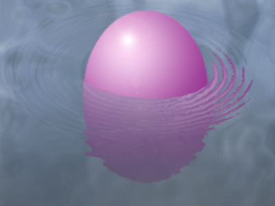
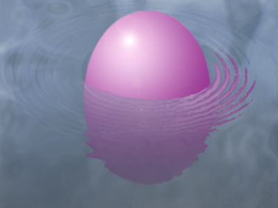

Самостоятельная работа
Самостоятельно создайте изображение, подобное тому, что вы видите на рисунке, используя полученные знания. Примените инструменты выделения и рисования, фильтры, эффекты:
Готовое изображение сохраните в своей папке.
Самостоятельно создайте изображение, подобное тому, что вы видите на рисунке, используя полученные знания. Примените инструменты выделения и рисования, фильтры, эффекты:
Готовое изображение сохраните в своей папке.
